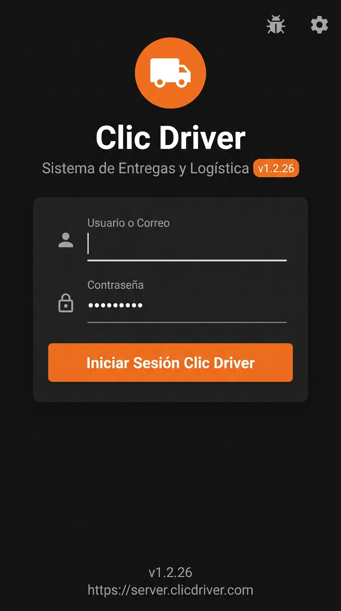
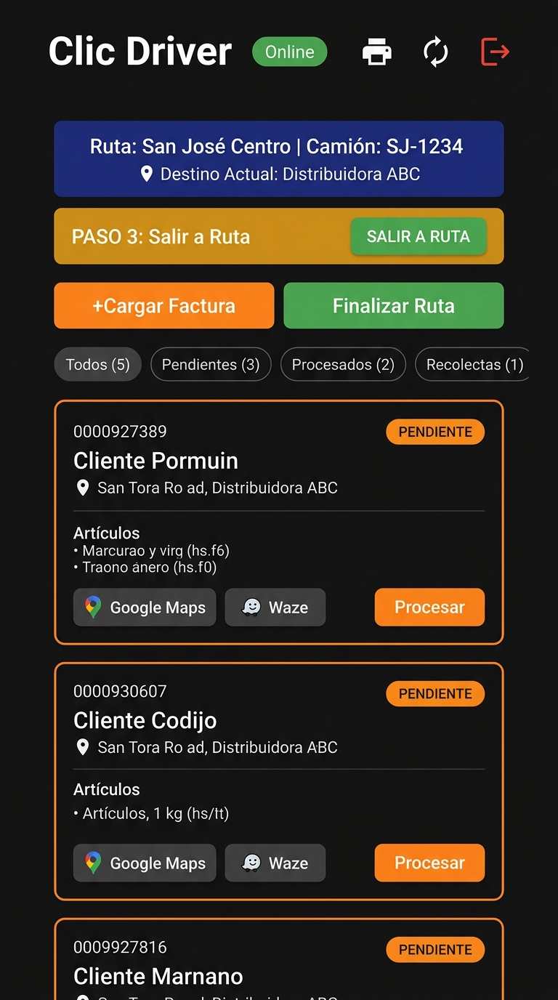
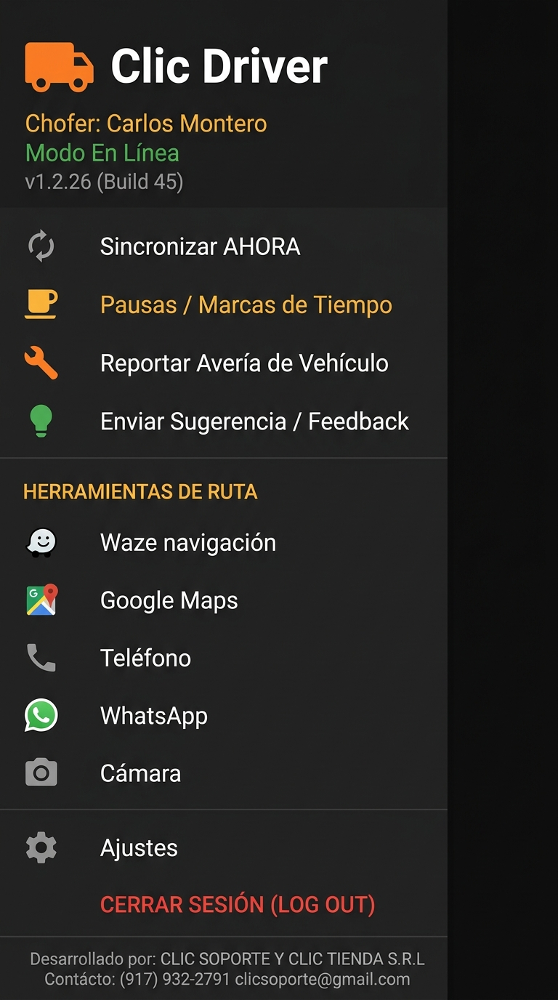
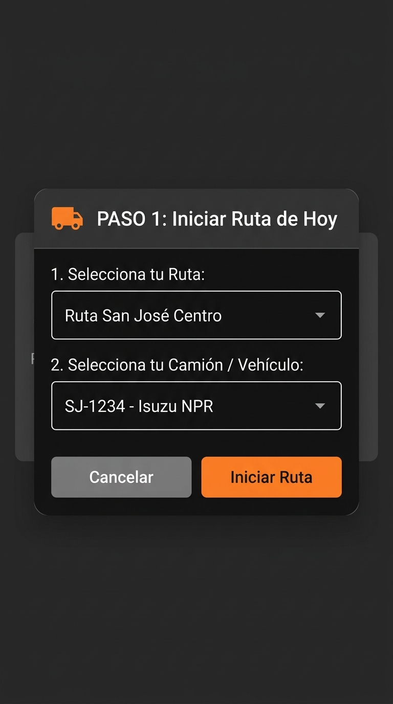
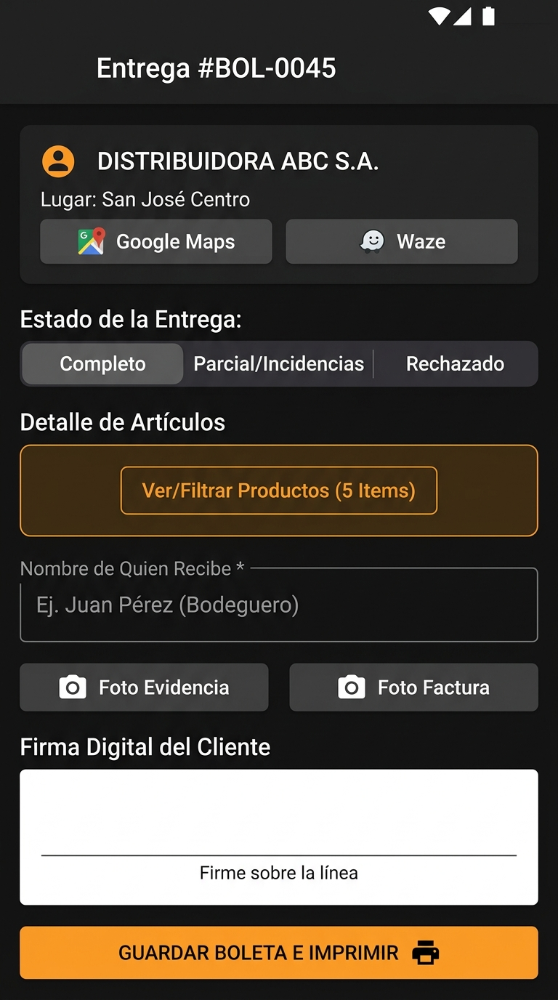
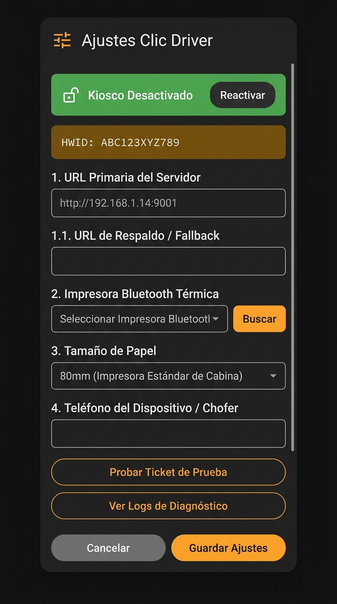

Clic Driver
Sistema de Entregas & Logística · Manual de Usuario
Para conductores y repartidores Nivel: Desde cero v1.2.26Este manual explica, paso a paso y en lenguaje sencillo, cómo usar la aplicación de entregas desde el teléfono. No requiere conocimientos técnicos.
📋 Contenido de este manual
- Bienvenida: ¿qué es Clic Driver?
- Requisitos e instalación en el teléfono
- Pantalla de inicio de sesión
- Pantalla principal (el panel)
- Menú lateral (menú hamburguesa)
- Tu ruta paso a paso (inicio a cierre)
- Cómo procesar una entrega en detalle
- Recolectas (retiro de mercadería en proveedores)
- Herramientas durante la jornada (pausas, averías, sugerencias)
- Ajustes y acceso de supervisor
- Trabajar sin conexión a internet
- Actualizaciones automáticas de la app
- Cerrar sesión
- Preguntas frecuentes y solución de problemas
- Soporte técnico
1Bienvenida: ¿qué es Clic Driver?
Clic Driver es la aplicación que usas en el teléfono celular del camión para realizar las entregas y recolecciones del día. Con ella puedes:
- Iniciar tu ruta del día (escogiendo tu ruta y tu camión).
- Cargar las facturas que te asignaron a tu ruta.
- Marcar la salida de bodega y avisar cuál es tu próximo cliente.
- Procesar cada entrega: estado, artículos, foto, firma y boleta impresa.
- Registrar pausas, averías del vehículo y enviar sugerencias.
- Trabajar aunque no haya internet (la app guarda todo y lo sincroniza después).
La aplicación se conecta con el servidor Clic-Tools de la empresa. Es una herramienta exclusiva para personal autorizado.
2Requisitos e instalación en el teléfono
2.1 ¿Qué necesito?
| Elemento | Detalle |
|---|---|
| Teléfono | Android (la app se entrega como archivo .apk). |
| Versión de Android | Versión reciente recomendada por el administrador. |
| Conexión | Internet (Wi-Fi o datos) para la primera configuración y sincronización. La app también funciona sin conexión. |
| Permisos | Ubicación (GPS), cámara, Bluetooth y notificaciones. La app los solicita al primer inicio. |
| Impresora térmica | Opcional, vía Bluetooth para imprimir boletas (80mm o 58mm). |
| Usuario y contraseña | Te los asigna el administrador o Logística. |
2.2 Instalar la aplicación
- Recibe el archivo
ClicDriver.apk(por enlace, correo o memoria). Si el teléfono pide permiso para "instalar aplicaciones de fuentes desconocidas", acéptalo: es una app interna de la empresa. - Ábrelo y pulsa Instalar. Espera a que termine.
- Cuando termine, pulsa Abrir. Verás el logo naranja con un camión y el nombre Clic Driver.
2.3 Primeros permisos (importante)
Al abrir la app por primera vez, Android puede preguntarte por permisos de cámara, ubicación, Bluetooth y notificaciones. Debes permitirlos: son necesarios para tomar fotos de evidencia, registrar el punto GPS de cada entrega e imprimir boletas.
3Pantalla de inicio de sesión

Al abrir la app verás la pantalla oscura con el logo naranja, el título Clic Driver, el subtítulo "Sistema de Entregas & Logística" y una versión (por ejemplo v1.2.26).
3.1 Iniciar sesión con usuario y contraseña
- Usuario o Correo: escribe tu usuario o correo (ej.
chofer@clicsoporte.com). - Contraseña: escribe tu contraseña (los puntos ocultan lo que escribes).
- Pulsa el botón naranja 🔐 Iniciar Sesión Clic Driver.
- Mientras inicia sesión verás "Autenticando...". En segundos entras a la pantalla principal.
3.2 Iniciar sesión con huella dactilar (super rápido)
Después de tu primer inicio de sesión exitoso, la app te pregunta si quieres activar la huella dactilar para entrar en 0.1 segundos sin escribir la contraseña.
- En el cuadro "¿Activar Huella Dactilar?", pulsa Activar Huella y valida tu huella en el lector del teléfono.
- La próxima vez que abras la app, aparecerá el botón 👆 Iniciar como [tu nombre] con Huella. Tócalo y coloca el dedo: entras directo.
3.3 Configurar la dirección del servidor (solo personal autorizado)
En la esquina superior derecha de la pantalla de inicio hay un botón de engranaje (⚙️). Al tocarlo se abre el cuadro "Servidor Clic-Tools":
- URL Primaria del Servidor (LAN / WAN): dirección del servidor principal (ej.
http://192.168.1.14:9001). - URL de Respaldo / Fallback (Opcional): dirección alternativa por si el principal falla.
- Pulsa Guardar para guardar, o Cancelar para salir sin cambios.
3.4 Ver los registros (logs) de diagnóstico
El botón de la chinche/insecto (🐛) en la parte superior abre los "Logs de Diagnóstico". Es una ventana técnica con el historial de conexiones, errores y eventos. Úsala solo si te la piden los técnicos para resolver un problema.
4Pantalla principal (el panel)

Esta es la pantalla donde pasas la mayor parte del día. Vamos a explicar cada parte.
4.1 La barra superior
| Elemento | Qué hace |
|---|---|
| ☰ | Abre el menú lateral con todas las opciones. |
| Clic Driver | Título de la aplicación. Si hay una actualización, al lado aparece una etiqueta morada con la nueva versión. |
| Online / Offline | Verde = conectado al servidor. Amarillo = sin conexión (trabajas en modo local). |
| 🖨 | Estado de la impresora Bluetooth. Verde = conectada. Amarillo = desconectada (toca para buscar/conectar). |
| 🔄 n | Sincronizar manualmente. Si aparece un número rojo, hay esa cantidad de entregas guardadas en el teléfono sin subir. |
| ⏻ | Cerrar sesión (salir de la app). Ver sección 13. |
4.2 La lista de entregas
Debajo de la barra superior verás la lista de tus documentos. Cada tarjeta muestra:
- Estado en una etiqueta de color: PENDIENTE / COMPLETO / INCOMPLETO / RECHAZADO.
- Doc. ERP: número del documento (factura) para validar contra la factura física.
- 📄 Boleta: número de la boleta impresa.
- Código Cliente y Cliente: quién recibe.
- Destino (EMB): lugar de entrega.
- Observaciones ERP: notas importantes de la factura.
- 📦 Artículos: lista de productos (muestra los primeros 3 y cuántos más hay).
- Botones 🗺️ Google Maps y 🚗 Waze para abrir la navegación.
- Botón Procesar para comenzar la entrega (si ya está procesada dice "Ver Procesado").
- Si el cliente actual es tu destino, la tarjeta se resalta con borde amarillo y la etiqueta "📍 DESTINO ACTUAL".
4.3 Filtros rápidos
Arriba de la lista hay filtros que puedes tocar para ver solo un grupo:
- Todos (n): todas las entregas.
- Pendientes (n): las que aún no procesas.
- Procesados (n): las que ya entregaste o marcaste.
- Recolectas (n): los retiros en proveedores (ver sección 8).
4.4 Actualizar la lista (tirar para abajo)
En cualquier momento puedes deslizar el dedo hacia abajo sobre la lista para refrescarla (como en WhatsApp). La app también se actualiza sola al volver de una entrega o al reconectarte.
5Menú lateral (menú hamburguesa ☰)

Toca el icono ☰ (arriba a la izquierda) para abrir el menú lateral. Arriba verás el logo, tu nombre de chofer, el modo (Online/Offline) y la versión.
| Opción | Qué hace |
|---|---|
| 🔄 Sincronizar AHORA | Fuerza la conexión con el servidor para subir y bajar datos. |
| ☕ Pausas / Marcas de Tiempo | Abre el registro de pausas (merienda, almuerzo). Ir a la sección. |
| 🛠️ Reportar Avería de Vehículo | Reporta una falla del camión a la central. Ir a la sección. |
| 💡 Enviar Sugerencia / Feedback | Envía una idea o mejora a la administración. Ir a la sección. |
| 🚀 HERRAMIENTAS DE RUTA | Accesos directos a apps autorizadas (Waze, Maps, Teléfono, WhatsApp, Cámara, etc.). Ir a la sección. |
| ⚙️ Ajustes | Configuración técnica (pide PIN de supervisor). Ir a la sección. |
| ⏻ CERRAR SESIÓN (LOG OUT) | Sale de la cuenta y vuelve al inicio de sesión. |
6Tu ruta paso a paso (de inicio a cierre)
Este es el corazón de Clic Driver. La jornada tiene un orden lógico. La app te lo recuerda con avisos naranjas "PASO 1", "PASO 2", etc.
Paso 1 · Iniciar Ruta de Hoy
Si todavía no inicias ruta, la pantalla principal muestra el aviso "PASO 1: Inicia tu Ruta de Hoy" con un botón naranja grande.

- Pulsa 🚛 Iniciar Ruta (o el botón "Iniciar Ruta de Hoy").
- En la ventana "PASO 1: Iniciar Ruta de Hoy" verás dos listas:
- 1. Selecciona tu Ruta: toca y elige la ruta asignada.
- 2. Selecciona tu Camión / Vehículo: toca y elige tu camión (aparece la placa, marca y modelo).
- Pulsa Iniciar Ruta (verde/confirmación).
- Verás el mensaje "✓ Ruta iniciada. Ahora procede con Autocarga de facturas."
Paso 2 · Autocarga de Facturas
Ahora toca cargar las facturas que irás a entregar. Pulsa el botón + Cargar Factura que está en la franja de arriba del panel.
- Se abre la ventana "PASO 2: Autocarga de Facturas".
- Escribe los números de factura separados por coma. Ejemplo:
6393, 6394, 6395. - Pulsa Cargar a Mi Ruta.
- La app te confirma con "✓ ..." y la lista se llena con tus facturas.
Paso 3 · Salir a Ruta
Cuando tengas facturas cargadas, aparecerá una franja amarilla con el aviso "PASO 3: Debes presionar 'Salir a Ruta' antes de realizar entregas".
- Pulsa el botón verde 🚩 SALIR A RUTA.
- Verás el mensaje "🚩 Salida a Ruta Registrada con éxito".
Paso 4 · Indicar el siguiente destino (cliente)
Al salir, la app abre la ventana "📍 Selecciona tu Destino".
- Aparece la pregunta "¿Cuál es el siguiente cliente a visitar?" con la lista de tus clientes pendientes.
- Selecciona el cliente al que vas primero.
- Pulsa Confirmar Destino.
En la banda azul de arriba verás "📍 Destino Actual: [cliente]", y sus entregas subirán al tope de la lista con la etiqueta "DESTINO ACTUAL".
Paso 5 · Procesar cada entrega
En cada tarjeta de la lista, pulsa Procesar. Esto abre la pantalla de entrega, que se explica a detalle en la sección 7.
Paso 6 · Finalizar la Ruta (cerrar la jornada)
Cuando termines todas las entregas, pulsa el botón verde 🏁 Finalizar Ruta (aparece arriba en lugar de "Iniciar Ruta").
- La app te muestra la ventana "🏁 Finalizar Ruta" y te pregunta si estás seguro.
- Si aún te quedan documentos pendientes, verás un aviso amarillo indicando cuántos hay y que volverán a la cola general.
- Pulsa Sí, Finalizar Ruta para cerrar, o Cancelar para seguir trabajando.
Al finalizar se genera la liquidación oficial de tu jornada y el panel vuelve al estado inicial (PASO 1).
7Cómo procesar una entrega en detalle

Esta es la pantalla más importante del día. Aquí registras qué pasó con cada factura. Arriba verás el número: Entrega #... (o 📦 Recolección #... si es un retiro).
7.1 Paso A · Elige el estado de la entrega
Es obligatorio elegir primero el estado. Verás la etiqueta roja "SELECCIÓN REQUERIDA" hasta que elijas:
| Estado | Cuándo usarlo |
|---|---|
| Completo | Entregaste todo lo de la factura. |
| Parcial / Incidencias | Entregaste parte; faltó mercadería (debes indicar el faltante en los artículos). |
| Rechazado | El cliente no recibió la mercancía (debes indicar quién rechaza y el motivo en las notas). |
7.2 Paso B · Revisa y ajusta los artículos
- Pulsa el botón 🔍 Ver / Filtrar Productos (n Ítems).
- Se abre la ventana "Detalle de Artículos" con la lista de productos y su cantidad Pedida.
- Usa el buscador
🔍 Buscar por código o descripción...si hay muchos artículos. - Si la entrega es parcial, cada producto muestra un campo para escribir la cantidad entregada, un botón ✓ 100% (todo) o 🚫 0 (nada), y abajo el Faltante calculado.
- Cuando termines, pulsa ✓ Guardar / Regresar a la Entrega.
7.3 Agregar un faltante / incidencia
Si falta un producto que no está en la factura, toca el botón + Faltante (visible solo en modo Parcial).
- Escribe el Código del Producto (se sugiere uno automático).
- Escribe la Descripción del Producto.
- Indica Cantidad Pedida y Cantidad Entregada.
- Pulsa Agregar. El ítem se suma a la lista y la entrega se marca como parcial.
7.4 Nombre de quien recibe (o rechaza)
Escribe en el campo "Nombre de Quien Recibe *" el nombre de la persona que firma. El campo cambia según el estado elegido:
- Entrega normal: "Nombre de Quien Recibe".
- Rechazo: "Nombre de Quien Rechaza la Mercancía" (rojo) + explica el motivo en el cuadro de notas/observaciones si lo hay.
- Recolecta: "Nombre del Vendedor / Contacto que Entrega".
7.5 Evidencias fotográficas
Hay dos botones:
- 📷 Foto Evidencia: toma una foto del lugar/mercadería entregada.
- 📄 Foto Factura: toma una foto de la factura sellada/firmada.
Cuando tomas una foto, el botón cambia a "✓ Foto Evidencia" en verde y se muestra la vista previa. Si la empresa lo tiene configurado como obligatorio, sin estas fotos no podrás guardar la entrega.
7.6 Firma digital del cliente
Debajo verás el recuadro blanco "Firma Digital del Cliente (Táctil)" con la guía "Firme sobre la línea".
- Pide al cliente que firme con el dedo dentro del recuadro.
- Si se equivoca, pulsa 🔄 Limpiar Firma y repite.
7.7 Guardar e imprimir la boleta
Cuando todo esté listo, pulsa el botón grande naranja:
- 🖨 GUARDAR BOLETA E IMPRIMIR (con impresora activa).
- 💾 GUARDAR Y CERRAR (si la impresión está desactivada).
La app captura el punto GPS del cliente, guarda todo, intenta sincronizar con el servidor y imprime la boleta por Bluetooth (si hay impresora conectada). Luego verás "✓ Entrega guardada exitosamente" y volverás al panel.
7.8 Reimprimir el tiquete
En entregas ya procesadas aparece el botón 🖨️ Reimprimir Tiquete de Esta Entrega para volver a imprimir la boleta cuando lo necesites (por ejemplo si se rompió el papel).
7.9 Opciones en entregas ya procesadas (en el panel)
Al volver al panel, las tarjetas procesadas muestran dos iconos al lado del botón "Ver Procesado":
- ✉️ Enviar por Correo: abre la ventana "✉️ Enviar Boleta por Correo". Escribe el correo del cliente y pulsa Enviar.
- ↩️ Revertir a Pendiente: devuelve la entrega a estado pendiente para volver a procesarla. La app te pide confirmación con "🔄 Revertir Entrega".
8Recolectas (retiro de mercadería en proveedores)
Las recolectas son documentos marcados con la etiqueta 📦 RECOLECTA. Significan que debes ir al proveedor a retirar mercadería y traerla a la empresa. Se procesan igual que una entrega, pero los textos cambian:
- La pantalla dice "📦 Recolección #...".
- Los estados son "Recogido Completo", "Retiro Parcial" y "No se Pudo Recoger".
- El campo de nombre pide el contacto/vendedor que entrega la mercadería.
- La firma es del proveedor / contacto.
8.1 La ficha completa de recolecta
Toca el enlace ℹ️ Ficha Recolecta en la tarjeta para abrir la ventana "📦 FICHA COMPLETA DE RECOLECTA #..." con todos los datos:
- 🏭 DATOS DEL PROVEEDOR Y RETIRO: razón social, código, orden de compra (OC), factura y método de pago.
- 📍 UBICACIÓN Y DIRECCIÓN DE RETIRO: a dónde vas.
- 👤 CONTACTO EN PROVEEDOR: nombre, teléfono y botones 💬 WhatsApp Proveedor y 📞 Llamar.
- 💼 DATOS DEL SOLICITANTE INTERNO (COMPRAS): quién pidió la mercadería, con sus botones de WhatsApp y llamada.
- ⏰ HORARIO Y DESTINO DE ENTREGA EN EMPRESA: horario de atención y dónde dejar la mercadería.
- 📦 ARTÍCULOS A RECOLECTAR: lista de productos.
9Herramientas durante la jornada
9.1 Pausas / Marcas de tiempo (☕)
Desde el menú lateral, toca ☕ Pausas / Marcas de Tiempo para registrar tu pausa:
- Elige el tipo de pausa:
- 🥐 Merienda Mañana (ej. 15 minutos).
- 🍱 Almuerzo (ej. 45 minutos).
- ☕ Merienda Tarde (ej. 15 minutos).
- La app inicia un contador regresivo en pantalla.
- Cuando el tiempo termina, aparece "¡TIEMPO FINALIZADO!" para que reinicies tu jornada.
- Puedes terminar la pausa antes con el botón rojo ⏹ Finalizar Pausa Ahora. La app reporta la duración y si te excediste.
9.2 Reportar avería del vehículo (🛠️)
Desde el menú lateral, toca 🛠️ Reportar Avería de Vehículo:
- Elige el Tipo de Avería de la lista (Mecánica, Eléctrica, Llantas, Frenos, Motor, Fuga de Aceite, Accidente, Climatización, Otro).
- Escribe la descripción de la falla.
- Opcional: 📷 Adjuntar Foto de Avería.
- Pulsa 📤 Enviar Reporte. Se envía directo a la central.
9.3 Enviar sugerencia / feedback (💡)
Desde el menú lateral, toca 💡 Enviar Sugerencia / Feedback:
- Escribe tu opinión, sugerencia o mejora en el cuadro de texto.
- Pulsa Enviar Sugerencia.
- Verás el mensaje "💡 ¡Gracias! Tu sugerencia fue enviada exitosamente".
9.4 Herramientas de ruta (apps rápidas)
En el menú lateral, la sección "🚀 HERRAMIENTAS DE RUTA" te da accesos directos a las aplicaciones autorizadas por la empresa: Waze, Google Maps, Teléfono, WhatsApp, Cámara, entre otras.
- Toca la app que quieras y se abrirá directamente.
- Si la app no está instalada, verás un aviso en rojo.
- La lista puede variar según lo que fije el administrador (a veces aparecen "fijadas" con la etiqueta 📌 HERRAMIENTAS DE RUTA).
10Ajustes y acceso de supervisor

Los ajustes técnicos están protegidos. Al tocar ⚙️ Ajustes (en el menú lateral o tocando el logo del camión en la cabecera del menú), la app pide el PIN de Administrador en la ventana "ACCESO DE SUPERVISOR". Sin el PIN correcto no se puede entrar (toca Cancelar para salir).
10.1 Dentro de "Ajustes Clic Driver"
| Sección | Qué hace |
|---|---|
| 🛡️ Kiosco Nativo Activo | Tarjeta del modo kiosco (la app se comporta como "dueña" del teléfono). Botón "Desactivar" para pausarlo temporalmente (solo mantenimiento). |
| HWID | Identificador del teléfono (código de hardware). Útil para soporte. |
| 1. URL Primaria del Servidor | Dirección principal del servidor. |
| 1.1 URL de Respaldo / Fallback | Dirección alternativa por si falla la principal. |
| 2. Impresora Bluetooth Térmica | Botón 🔄 Buscar para listar impresoras vinculadas y elegir la tuya. |
| 3. Tamaño de Papel | 80mm (impresora de cabina) o 58mm (impresora portátil de cinturón). |
| 4. 📱 Teléfono del Dispositivo / Chofer | Número de contacto del chofer (ej. +506 8888-8888). |
| 🖨 Probar Ticket de Prueba | Imprime un ticket de prueba para verificar la impresora. |
| 🐞 Ver Logs de Diagnóstico | Abre el registro técnico de eventos (para soporte). |
Cuando termines, pulsa Guardar Ajustes para guardar todo, o Cancelar para salir sin cambios.
11Trabajar sin conexión a internet (modo offline)
Clic Driver está diseñada para que nunca pares tu jornada por falta de señal. Así funciona:
- En la barra superior, el indicador pasa a Offline cuando no hay conexión.
- Todo lo que haces (entregas, salidas, destinos, sugerencias) se guarda en la memoria del teléfono.
- El icono 🔄 muestra un número rojo con la cantidad de entregas pendientes de subir.
- Cuando recuperes señal, toca 🔄 Sincronizar AHORA (menú lateral) o el icono de sincronización de la barra superior, y la app sube todo automáticamente.
12Actualizaciones automáticas de la app (OTA)
Clic Driver puede actualizarse sola cuando la empresa publica una versión nueva. Lo que verás:
- Al abrir la app, se revisa automáticamente si hay una versión nueva.
- Si la hay, aparece la ventana "Actualización vX.X.X" con una barra de progreso y el mensaje "Instalación desatendida en curso. No apague el teléfono."
- La descarga e instalación ocurren solas. La app se reinicia con la versión nueva.
- En la barra superior del panel aparece una etiqueta morada con la versión nueva disponible, por si necesitas iniciarla manualmente.
13Cerrar sesión
Puedes salir de tu cuenta de dos formas:
- Botón ⏻ (flecha de salida) en la barra superior del panel.
- Menú lateral → ⏻ CERRAR SESIÓN (LOG OUT).
Al cerrar sesión vuelves a la pantalla de inicio de sesión y se detiene la sincronización en segundo plano. Recomendado al entregar el teléfono o terminar tu turno.
14Preguntas frecuentes y solución de problemas
🔑 No puedo iniciar sesión
Revisa que tengas internet y que la dirección del servidor sea la correcta (sección 3.3). Verifica tu usuario y contraseña con Logística. Si la app te dice "No se pudo conectar al servidor", probablemente el teléfono está fuera de la red de la empresa o la dirección cambió.
🖨 La impresora no imprime
- Enciende la impresora y verifica que esté vinculada al teléfono (Ajustes de Android → Bluetooth).
- En ⚙️ Ajustes → Impresora Bluetooth pulsa 🔄 Buscar y elige tu impresora.
- Guarda los ajustes y prueba con 🖨 Probar Ticket de Prueba.
- Verifica que el Bluetooth del teléfono esté encendido. La app te avisa con un mensaje naranja si está apagado.
- Confirma el tamaño de papel (80mm o 58mm) correcto para tu impresora.
📍 El GPS no me deja guardar
Si la empresa activó el "Guardián de GPS", no podrás guardar entregas con el GPS apagado. Activa la ubicación del teléfono y vuelve a intentar. La app te muestra una ventana para ayudarte.
🔒 La app se quedó "congelada" en kiosco y no puedo salir
El modo kiosco es una medida de seguridad de la empresa. Para mantenimiento, un supervisor puede desactivarlo temporalmente desde ⚙️ Ajustes (con PIN) usando el botón de la tarjeta 🛡️ Kiosco. Si no puedes entrar a Ajustes, pide ayuda a TI.
🔢 El número rojo no baja de 0
Significa que hay entregas sin subir. Pulsa 🔄 Sincronizar AHORA con buena señal. Si persiste, revisa la conexión y avisa a Logística.
❌ Marqué mal una entrega (completa y era parcial, etc.)
Si la opción está habilitada, en el panel abre la entrega procesada y pulsa el icono ↩️ Revertir a Pendiente, luego reprocésala. Si el botón no aparece, la reversión está deshabilitada: avisa a Logística para que la corrija.
📦 No encuentro una factura en mi lista
Revisa los filtros (Todos / Pendientes / Procesados / Recolectas). Si no está, quizá no se cargó a tu ruta: usa + Cargar Factura (Paso 2) o avisa a Logística.
📲 ¿Cómo se que mi versión es la más reciente?
En el menú lateral verás v1.2.26 (Build 45). Si hay una actualización, la app la instala sola (sección 12).
15Soporte técnico
Si después de seguir este manual algo no funciona, contacta al soporte de la empresa. Ten a la mano:
- El HWID de tu teléfono (visible en ⚙️ Ajustes, sección 10).
- La versión de la app (visible en el menú lateral).
- Una descripción de qué hiciste y qué mensaje de error apareció.
- Opcional: los logs de diagnóstico (botón 🐛) que pueden pedirte los técnicos.
Cédula Jurídica: 3-102-894538
Teléfono: +506 4000-0630
Correo: soporte@clicsoporte.com
Web: www.clicsoporte.com
Generado para uso interno · Desarrollado por CLIC SOPORTE Y CLIC TIENDA S.R.L